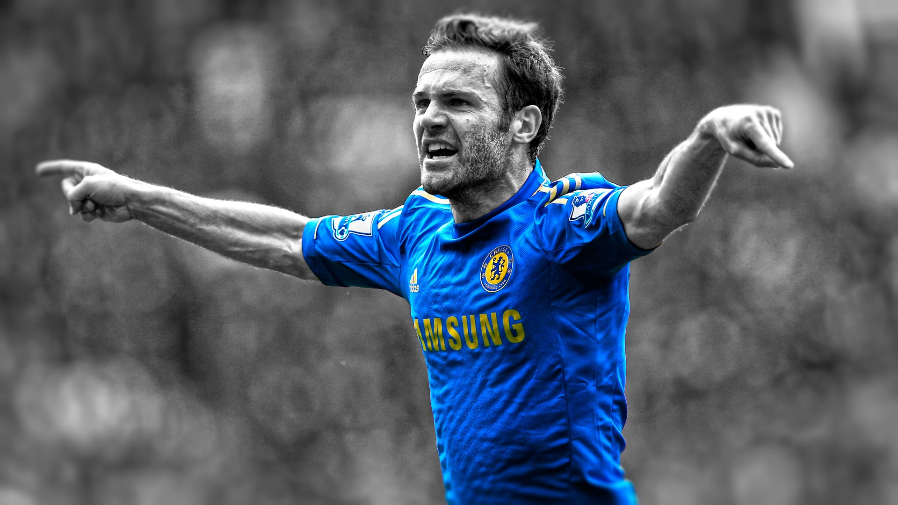
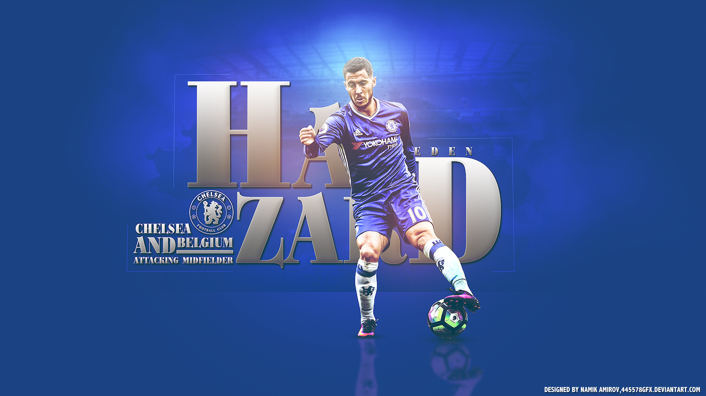
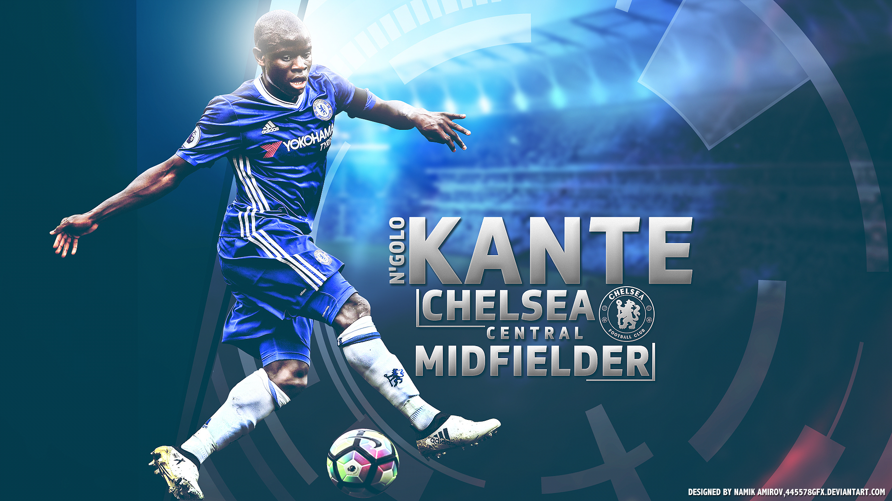
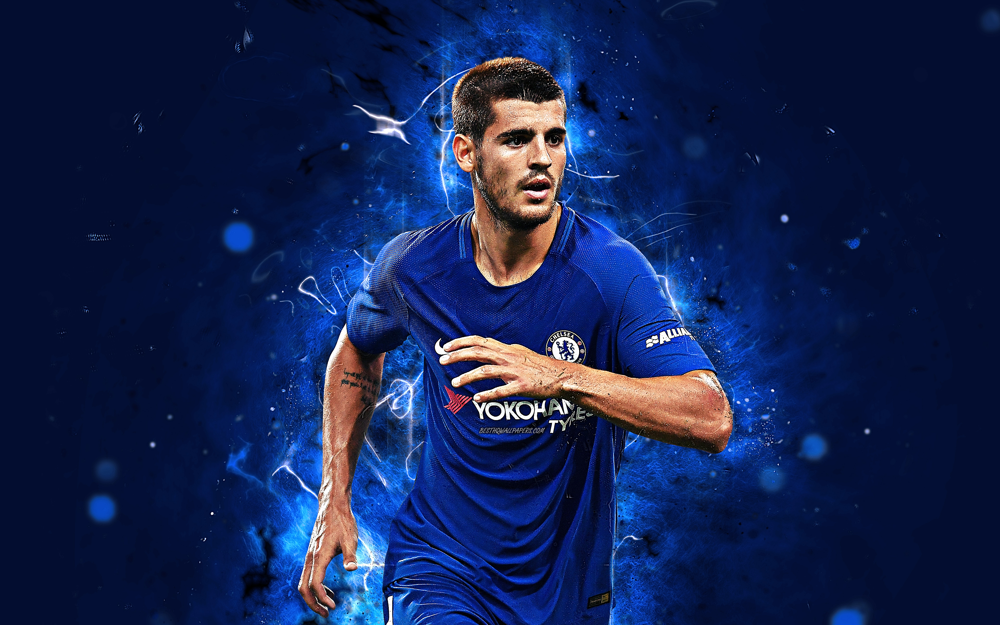

We are glad to introduce you to our players

Juan Manuel Mata García
Date of birth: 28 April 1988 (age 31)
Place of birth: Burgos, Spain
Height: 1.70 m (5 ft 7 in)[2]
Playing position: Attacking midfielder
Click if you love Mata
Olivier Jonathan Giroud
Date of birth: 30 September 1986 (age 33)
Place of birth: Chambéry, France
Height: 1.93 m (6 ft 4 in)[3]
Playing position: Striker
Click if you love giroud

Eden Michael Hazard
Date of birth: 7 January 1991 (age 29)
Place of birth: La Louvière, Belgium
Height: 1.75 m (5 ft 9 in)
Playing position: Left winger / Attacking midfielder
Click if you love hazard

N'Golo Kanté
Date of birth: 29 March 1991 (age 28)
Place of birth: Paris, France
Height: 1.68 m (5 ft 6 in)[3]
Playing positio: Central midfielder
Click if you love kante

Álvaro Borja Morata Martín
Date of birth: 23 October 1992 (age 27)
Place of birth: Madrid, Spain
Height: 1.90 m (6 ft 3 in)[2]
Playing position: Striker
Click if you love morata

Joao Leandro Rodríguez González
Date of birth: 19 May 1996 (age 23)
Place of birth: Cúcuta, Colombia
Height: 1.80 m (5 ft 11 in)
Playing position: Forward
Click if you love rodriguez